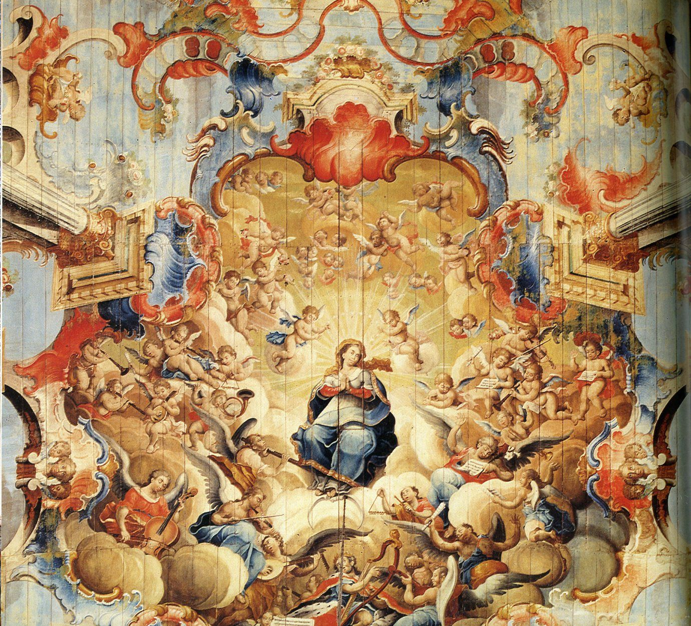

O Barroco é um estilo que dominou a arquitetura, a pintura, a literatura e a música na Europa do século XVII. Por isso, toda a cultura desse período, incluindo costumes, valores e relações sociais, é chamada de "barroca".
Essa época surgiu no final do Renascimento e manifestava-se através de grande ostentação e extravagância entre os grupos beneficiados pelas riquezas da colonização.
Para diversos pesquisadores o Barroco constitui não apenas um estilo artístico, mas todo um período histórico e um movimento sociocultural, onde se formularam novos modos de entender o mundo, o homem e Deus. As mudanças introduzidas pelo espírito barroco se originaram, pois, de um grande respeito pela autoridade da tradição clássica, e de um desejo de superá-la com a criação de obras originais, dentro de um contexto que já se havia modificado profundamente em relação ao período anterior.

Após as Reformas Religiosas, ocorridas no século XVI, a Igreja Católica perdeu muito poder e espaço, no entanto, os católicos seguiam com a sua influência nos cenários político, econômico e religioso na Europa. O Barroco aparece neste contexto, expressando o contraste daquele período, como a espiritualidade e o teocentrismo da Idade Média e o racionalismo e antropocentrismo do Renascimento. Os artistas barrocos foram patrocinados pelos burgueses, monarcas e pelo clero.